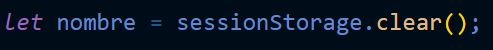

LocalStorage y SessionStorage
Ambas se tratan de "APIS" para el almacenamiento de datos en el naveador, la diferencia entre ellas radica en que "localStorage" es un almacenamiento permanenete,sin importar si se actualisa la paguina, o se cierra el navegador esos datos permaneseran guardados en "localStorage", por otra parte "sessionStorage" se trata de un almacenamiento volatil es decir que al actualizar la pestaña o cerrar el navegador la información se pierde.
Ambas "APIS" funcionana basicamente igual, de hecho poseen los mismos metodos, para minipular los datos:
-
Para guardar un dato en estas "apis" se usa el metodo ".setItem( )", para ingresar datos se requiere un nombre de "key" y el dato a almacenar, la "key" funciona como un identificador para el dato, en otras palabras el almacenage de en "storage" requiere cadenas nombre/valor:
LocalStorage
SessionStorage

-
Para Obtener un dato desde "localStorage" o "sessionStorage" se usa el metodo ".getItem( )", este metodo unicamete requiere que se le espesifique el nombre de la "key" para poder seleccionar el dato indicado:
LocalStorage

SessionStorage
-
Para eliminar un dato de estas "api" se usa la función "removeItem( )", del mismo modo que "getItem( )" esta función solo requiere el nombre de la key que identifica el dato para ubicarlo, con la diferencia de que no lo obtiene si no que lo elimina
LocalStorage

Nota: En el caso de "localStorage" el dato no se eliminara hasta que se le indique.
SessionStorage
Nota: En el caso de "sessionStorage" el dato se eliminara si se recarga la paguina o si se cierra el navegador.
-
Para eliminar todos los datos almacenados en estas "api" se usa el metodo "clear( ), este metodo no requiere de ningun parametro, simplemente elimina todos los datos guardados en "localStorage" y en "sessionStorage"
LocalStorage

SessionStorage

Nota: se puede observar el contenido de cualquiera de estas apis ya sea aplicando un "consol.log" a los objetos "sessionStorage" o "localStorage", así como tambien ingresando a las herramientas de desarrollador de google, a la sección de "Aplicación (Aplication)" y en el secmento llamado "almacenamiento(Storage)"

Este se trata de un manejo muy basico del "localStorage" y del "sessionStorage", los metodos y propiedades de estas van mucho más allá, para profundizar se puede ingresar en el apartado del LocalStorage y del SessionStorage de "developer mozilla".